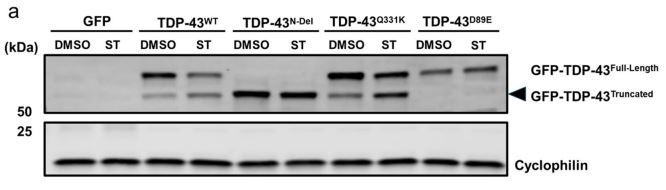

Inhibiting Glycogen Synthase Kinase 3 Suppresses TDP-43-Mediated Neurotoxicity in a Caspase-Dependent Manner
White, Crowley, Massenzio et al.
Molecular Neurobiology (2026)
Why it matters: This study helps explain how disease-associated TDP-43 toxicity might be reduced in brain cells. It highlights GSK3 inhibition as a promising way to interrupt harmful processes linked to ALS and frontotemporal dementia, pointing toward new therapeutic strategies for TDP-43-related neurodegeneration.
Scientifically, the work shows that TDP-43 activates GSK3 and promotes caspase-dependent cleavage of TDP-43, generating toxic truncated species. GSK3 inhibition reduced these truncated forms, improved neuronal survival, and showed protective effects across primary rodent neurons and human iPSC-derived cortical neurons.
